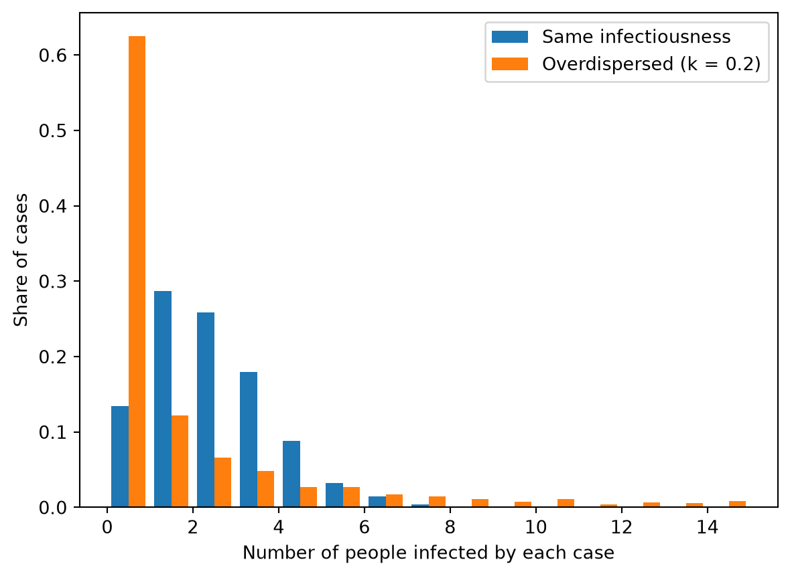
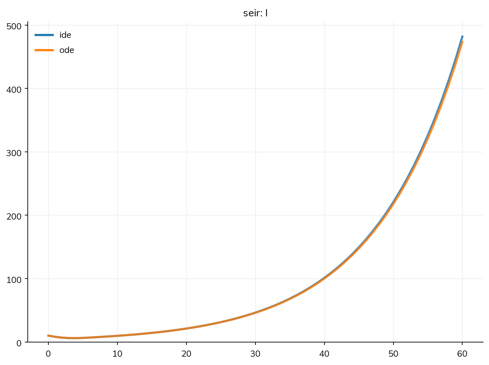
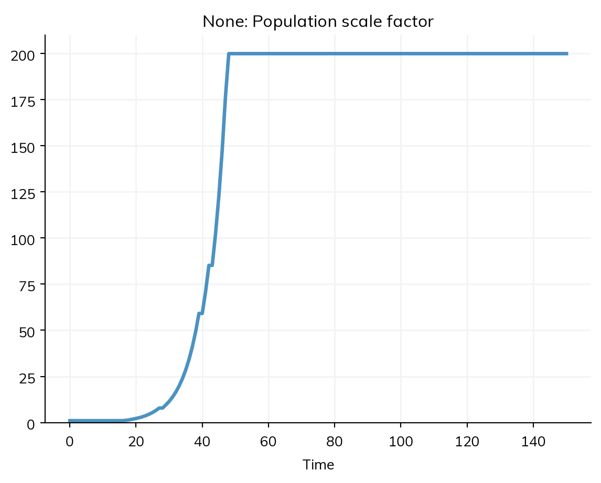
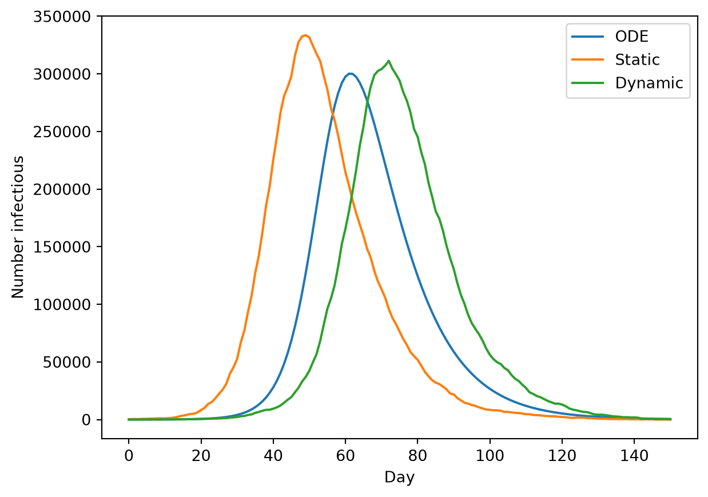

Many questions are about a small part of a large population: the first cases of an outbreak in a city, or an epidemic in a country of tens of millions. Simulating every person is then often unnecessary and slow. There are two ways round it. While an outbreak is small compared with the population, the susceptible people are hardly depleted, and it can be treated as a branching process: each case infects a random number of others, independently of every other case, and the rest of the population hardly matters. Once an epidemic is large, a run as agents can instead let each agent stand for several people: population rescaling. This page covers both. A compartmental model holds numbers of people, so it can be any size at no cost; a branching process can be run by any solver, and population rescaling is for runs of agents.
Branching processes
Early in an outbreak, each case infects a random number of others, its offspring. If the offspring of each case are independent of everyone else’s (as they are while nearly everyone is susceptible), the outbreak is a branching process, and a few of its properties follow from the offspring distribution alone:
The chance that an introduction dies out. Even with R0 above 1, the first few chains of transmission can all end by chance. For an SIR model with an exponentially distributed infectious period, started by one case, the chance is 1/R0; started by n cases, (1/R0)^n.
Chains and generations. Who infected whom, how many generations a chain lasts, and how large it gets before it dies out or takes off.
Overdispersion. If some cases infect many more people than others (superspreading), the offspring distribution has a long tail, and more introductions die out, even at the same R0.
In Starsim, a branching process is not a different model, but the same model run with depletion turned off: ss.Sim(branching=True). Infection then takes no one from the uninfected, and gives no one back, so the susceptible side stays as it would be with no infection, however large the outbreak gets. It works with every solver:
Solver
What it gives
'ode'
The expected course: exponential growth at the rate that goes with R0
'ide'
The same, with each dwell time as it is, which is the renewal equation (below)
'gillespie', 'binomial', 'tau'
A branching process of counts: the chance of extinction, and the distribution of chain sizes
'abm'
A branching process of individuals: who infected whom, and differences between people
With solver='auto', the solver is chosen as it would be without branching. What is held is the uninfected side: the states people can be in without having been infected. The model’s other flows act on it as usual, so vaccination (S >> V) still takes people from S. A flow back to the uninfected side, such as waning immunity, takes people out of the process instead, with a note. In a rate, N is the number of people on the uninfected side, so each case’s offspring average R0 however many cases are seeded.
The chance that an outbreak dies out
Here is an influenza-like infection with R0 = 2 (β = 0.2 per day, infectious for 10 days), introduced by one case into a city of a million people. An ODE always takes off, so the question needs a stochastic solver and many runs (see Solvers and backends). Gillespie’s algorithm is exact for this model, and as a branching process its cost is the number of events, not the size of the population. Each run stops once 100 people have been infected, by when its chain has taken off:
import numpy as npimport matplotlib.pyplot as pltimport starsim as ssS, I, R = ss.states('S I R')infection = S >> I @0.2*I # β = 0.2 per dayrecovery = I >> R @ ss.days(10) # Infectious for 10 days on average: R0 = 2flu = ss.Disease(infection, recovery, init_n=dict(I=1), name='flu') # One imported casesim = ss.Sim(flu, total_pop=1e6, stop=ss.days(100), solver='gillespie', branching=True, verbose=0)msim = sim.run(n_runs=100, until=flu.I.n + flu.R.n >=100)b = msim.branchingprint(f'Share of introductions that died out: {b.p_extinct:.2f} (95% interval {b.p_extinct_ci[0]:.2f} to {b.p_extinct_ci[1]:.2f}; theory: 1/R0 = 0.5)')
Share of introductions that died out: 0.48 (95% interval 0.38 to 0.58; theory: 1/R0 = 0.5)
until= stops a run once a condition holds: an expression of the model, as here, or a function of the sim, checked at the end of each step. It works for any run, not only a branching process; the results after the stop are NaN, and sim.stopped is the time point the run stopped at. Without it, a branching process that takes off grows without limit. msim.branching.plot() shows how large the chains got, and the gallery page The chance of a major outbreak does the same over a range of R0.
Chains and offspring, as agents
For chains of transmission, run the same model as agents. A branching process of agents makes agents only for the people infected, so a city of 10 million costs no more than a village: here, 100 imported cases, followed for 60 days:
flu = ss.Disease(infection, recovery, init_n=dict(I=100), name='flu') # 100 imported cases, for enough chains to countsim = ss.Sim(flu, total_pop=10e6, stop=ss.days(60), solver='abm', branching=True, verbose=0)sim.run()b = sim.branchingprint(f'{len(sim.people):,} agents for {sim.pars.total_pop:,.0f} people; {b.length} generations')
60,239 agents for 10,000,000 people; 21 generations
sim.branching has, for each agent, its infector (−1 for the imported cases), its generation, the time point it was infected (ti), and the number it infected (offspring). Since the most recent cases are still infecting others, only the offspring of the cases infected long enough before the end are counted in full (complete):
n = b.offspring[b.complete]print('Cases:', len(n), ' Mean offspring:', n.mean().round(2), ' Variance:', n.var().round(1), ' Share with none:', (n ==0).mean().round(2))
Cases: 432 Mean offspring: 2.13 Variance: 7.6 Share with none: 0.32
The mean is close to R0 = 2. With an exponential infectious period, the offspring distribution is geometric, with a variance of R0(1 + R0) = 6 and a third of cases infecting nobody: one reason why so many introductions die out.
To give the cases different infectiousness, give the disease rel_trans as an attribute drawn for each person, ss.attr(). With a fixed infectious period, a gamma distribution with mean 1 and shape k gives a negative binomial offspring distribution with dispersion k; k = 0.2 is about what has been estimated for SARS and other infections with superspreading. Comparing the offspring with and without it, each over 20 runs:
k =0.2offspring = {}for label, extra in [('Same infectiousness', {}), (f'Overdispersed (k = {k})', dict(rel_trans=ss.attr(ss.gamma(a=k, scale=1/k))))]: # Each person's infectiousness, with mean 1 S, I, R = ss.states('S I R') flu_k = ss.Disease(S >> I @0.2*I, I >> R @ ss.constant(ss.days(10)), init_n=dict(I=20), name='flu', **extra) sim = ss.Sim(flu_k, total_pop=10e6, stop=ss.days(60), solver='abm', branching=True, verbose=0) msim = sim.run(n_runs=8) b = msim.branching offspring[label] = b.offspringprint(f'{label}: R = {b.R:.2f}, k = {b.k:.2g}')bins = np.arange(0, 16)plt.hist(list(offspring.values()), bins=bins, density=True, label=list(offspring.keys()))plt.xlabel('Number of people infected by each case')plt.ylabel('Share of cases')plt.legend();
Same infectiousness: R = 1.98, k = 1.1e+02
Overdispersed (k = 0.2): R = 2.07, k = 0.21

With the same infectiousness and a fixed infectious period, the offspring are Poisson (k is infinite). With overdispersion, most cases infect nobody and a few infect many, so the outbreak grows more erratically, and more introductions die out: by theory, about 80% from one case, against 20% with the same infectiousness. msim.branching.R and .k are a negative binomial fitted by maximum likelihood, and are fitted only from runs of a fixed length: a run stopped by until= stops because its chain is large, so its cases had more offspring than most.
The renewal equation
solver='ide' is the deterministic solver that takes each dwell time as it is, rather than as the Erlang stages that 'ode' uses: an integro-differential model. As a branching process, it is the renewal equation that EpiEstim, EpiNow2, and epidemia are built on, with the generation interval that the model’s latent and infectious periods give:
S, E, I, R = ss.states('S E I R')seir = ss.Disease(S >> E @0.4*I, E >> I @ ss.lognorm_ex(mean=ss.days(5), std=ss.days(3)), I >> R @ ss.days(5), init_n=dict(I=10), name='seir')sims = {solver: ss.Sim(seir, total_pop=1e6, branching=True, solver=solver, stop=ss.days(60), verbose=0) for solver in ['ide', 'ode']}ss.parallel(sims).plot('seir.I')

The latent period here is lognormal. 'ide' keeps it as it is, as a conveyor of whole steps with the distribution’s own chance of leaving after each one; 'ode' approximates it with Erlang stages that match its mean and standard deviation, so the two are close but not the same. For a reproduction number that varies in time, give beta as an ss.timeseries, which sim.fit() can fit.
Population rescaling
Population size and number of agents
Two settings say how big the population is:
total_pop is the size of the population being modeled. As compartments, it is the total of the compartments; as agents, it is the number of people the agents stand for.
n_agents is how many agents are simulated. It is a computational choice, like the time step, and giving it makes the sim run as agents.
If neither is given, the population is 10,000. If only n_agents is given, total_pop is the same. If only total_pop is given and the sim runs as agents, there are as many agents as people, up to 10,000.
Here is an influenza-like infection (R0 = 0.3 per day × 10 days = 3) in a city of a million people, as compartments and as 10,000 agents. (This page uses a slower infection than measles, whose fast rates need short steps when run as agents; see Solvers and backends.)
S, I, R = ss.states('S I R')infection = S >> I @0.3*I # β = 0.3 per dayrecovery = I >> R @ ss.days(10) # Infectious for 10 days on averageflu = ss.Disease(infection, recovery, init_prev=0.001)ode = ss.Sim(flu, total_pop=1e6, stop=ss.days(150)).run() # A million people, as compartmentsagents = ss.Sim(flu, total_pop=1e6, stop=ss.days(150), solver='abm').run() # The same, as 10,000 agentsprint('People per agent:', agents.pars.pop_scale)
Sim: flu, 1,000,000 people, as an ODE, days 0 to 150
flu: R0 = 3, with 1,000 infectious at the start
Done in 0.0037 s; flu: 939,538 infections; at most 300,623 infectious, on day 38
Sim: flu, as 10,000 agents, each 100 people, days 0 to 150
Note: consider a shorter step (e.g. dt=ss.days(0.25)): each step is 1 day, and infection transmits at up to 0.3 per day (with everyone infectious), 26% in a step. Taking whole steps, agents may differ from the ODE by an amount of that order; sim.check_dt() shows how much it matters
Done in 0.072 s; flu: 941,300 infections; at most 312,800 infectious, on day 41
People per agent: 100.0
Each agent stands for 100 people, and the counts in the agents’ results are multiplied by 100. The two agree on the size of the epidemic and of its peak; the peak comes a few days later as agents, partly by chance and partly because agents take whole daily steps.
Static scaling
The number of people each agent stands for is pop_scale, which is total_pop / n_agents unless it is given itself. Results that are counts (such as I) are multiplied by it when the run ends; results that are shares or averages (such as prevalence) are not.
The cost is resolution. With 5,000 agents for a million people, each agent is 200 people, so an epidemic can’t start from fewer than 200 people, and an outbreak started by 10 people can’t be represented at all:
flu = ss.Disease(infection, recovery, init_n=dict(I=10)) # 10 people infectious at the startstatic = ss.Sim(flu, total_pop=1e6, n_agents=5_000, stop=ss.days(150), label='Static')static.run();
Sim "Static": flu, as 5,000 agents, each 200 people, days 0 to 150
Running as agents: n_agents was given
Note: consider a shorter step (e.g. dt=ss.days(0.25)): each step is 1 day, and infection transmits at up to 0.3 per day (with everyone infectious), 26% in a step. Taking whole steps, agents may differ from the ODE by an amount of that order; sim.check_dt() shows how much it matters
Note: "flu" starts with one agent in I (200 people): its initial number is 0.05 agents at 200 people per agent, which rounds to 0. For the number given, give more agents (n_agents=), or rescale=True
Done in 0.12 s; flu: 943,200 infections; at most 333,600 infectious, on day 49
Starsim notes the problem: 10 people are 0.05 of an agent, so the run starts with one agent infectious, which is 200 people, and its epidemic is that of 200 cases, not 10. The initial infections can instead be given as a number of agents, with ss.choose_n(), here 10 agents, each of whom stands for 200 people, so 2,000 people are infectious at the start:
flu = ss.Disease(infection, recovery, init_prev=10) # 10 agents infectious at the startstatic = ss.Sim(flu, total_pop=1e6, n_agents=5_000, stop=ss.days(150), label='Static')static.run();
Sim "Static": flu, as 5,000 agents, each 200 people, days 0 to 150
Running as agents: n_agents was given
Note: consider a shorter step (e.g. dt=ss.days(0.25)): each step is 1 day, and infection transmits at up to 0.3 per day (with everyone infectious), 26% in a step. Taking whole steps, agents may differ from the ODE by an amount of that order; sim.check_dt() shows how much it matters
Note: "flu" starts with one agent in I (200 people): its initial number is 0.05 agents at 200 people per agent, which rounds to 0. For the number given, give more agents (n_agents=), or rescale=True
Done in 0.12 s; flu: 943,200 infections; at most 333,600 infectious, on day 49
Dynamic rescaling
With rescale=True, each agent starts by standing for one person, and the number grows as the epidemic does, up to pop_scale. At the end of each step, the sim:
checks the share of agents who are no longer naive (who have left the first state of any disease);
if that share is more than rescale_threshold (5% by default), multiplies the number of people per agent by at least rescale_factor (1.2 by default), without going past pop_scale;
makes enough of the agents who are not naive naive again (if the number of people per agent doubles, half of them), so that the infected people are spread over fewer agents.
So every agent always stands for the same number of people, and agents are freed to stand for the part of the population that has not been infected yet. With dynamic rescaling, the 10 agents infectious at the start are 10 people:
Sim "Dynamic": flu, as 5,000 agents, each 200 people, days 0 to 150
Running as agents: n_agents was given
Note: consider a shorter step (e.g. dt=ss.days(0.25)): each step is 1 day, and infection transmits at up to 0.3 per day (with everyone infectious), 26% in a step. Taking whole steps, agents may differ from the ODE by an amount of that order; sim.check_dt() shows how much it matters
Done in 0.12 s; flu: 931,555 infections; at most 311,400 infectious, on day 72

The number of people per agent (sim.results.pop_scale) starts at 1, and grows as the epidemic does, to 200. Here are the three runs:
import matplotlib.pyplot as pltten = ss.Disease(infection, recovery, init_n=dict(I=10), name='flu') # 10 people infectious, as compartmentsode = ss.Sim(ten, total_pop=1e6, stop=ss.days(150), label='ODE', verbose=0).run()for sim in [ode, static, dynamic]: res = sim.results.flu.I plt.plot(res.timevec, res.values, label=sim.label)plt.xlabel('Day')plt.ylabel('Number infectious')plt.legend();

The static sim starts with 2,000 people infectious, so its epidemic peaks weeks earlier. The dynamic sim starts with 10, like the ODE here; it may take off later or earlier than the ODE by chance, since the ODE always takes off at once, while a few agents can take a while to start a chain of transmission (see Scenarios, and branching processes above).
Results count the people no agent stands for yet
While each agent stands for fewer people than pop_scale, part of the population is not represented by any agent. The sim counts these people as one number, sim.results.unrepresented: at the start, pop_scale − 1 for each agent; at each rescaling, from s to s′ people per agent, it falls by s′ − s for each agent alive then, who now stands for that many more. An agent who dies is the scale people it stands for, and one who is born adds that many, so neither changes it. The number alive is scale people for each agent alive, plus these. They are like the agents, and have never been infected, so a declared disease counts its share of them in its first state; another declared module, such as ss.Pregnancy, shares them out over its states as the agents are. The results are of the whole population from the start, and so is any share of it, such as prevalence:
res = dynamic.resultsprint('Alive at the start:', res.alive[0])print('Susceptible at the start:', res.flu.S[0])print('Infectious at the start:', res.flu.I[0])
Alive at the start: 1000000.0
Susceptible at the start: 999990.0
Infectious at the start: 10.0
Diseases written as code
Dynamic rescaling needs to know which agents are naive, and to make agents naive again. A declared disease does both by itself. A disease written as code that transmits (a subclass of ss.Infection) counts the agents who have ever been infected (ti_infected) as not naive, and its make_naive() puts each of its states back to its default value, except rel_sus and rel_trans, which other modules (such as vaccines) often change. A disease that keeps something else, or that sets rel_sus itself, overrides it:
class MyDisease(ss.Infection):def make_naive(self, uids, skip_states=None):super().make_naive(uids, skip_states=['rel_trans']) # Reset rel_sus tooself.my_custom_value[uids] =0# And anything not kept as a state
A count that is added up during the run would mix steps with different numbers of people per agent, so work out a running total in finalize_results(), after the results have been scaled; a declared disease’s running totals (res.infection.cum) are worked out from the scaled flows when they are asked for.
Pitfalls
Too few agents for the start of an epidemic. Starsim notes when the initial number of people rounds to too few agents; use more agents, ss.choose_n(), or rescale=True.
Results during a run are in agents. Counts are scaled when the run ends; an analyzer that reads a count during the run sees agents.
Rare events. An event that happens to fewer people than an agent stands for (a rare complication) happens to whole agents or not at all; such a model needs more agents.
Too few agents for a few seeds. A model started by a few people, run with each agent standing for several, starts from fewer agents than people, or from none: give n_agents equal to total_pop at least until the outbreak is large, or use rescale=True.
Dynamic rescaling and diseases written as code. The people no agent stands for yet are in the results of a declared module (for a disease, in its first state) and in alive, but not in those of a module written as code, whose counts and shares are of the people the agents stand for.
Dynamic rescaling with births and deaths. An agent who dies early, while it stands for few people, is few deaths, and the people no agent stands for are not born and do not die, so with many deaths or births before the scale reaches pop_scale, the population is not that of a run with each agent standing for pop_scale from the start. With more agents born than die before then, the count of people no agent stands for can fall below 0, as the agents come to stand for more people than there are.
Treating a depleting run as a branching process. Chains and offspring counted from a run in which a sizable share of people have been infected are biased down; count them only while the outbreak is small compared with the population.
A stochastic branching process with no until=. A chain that takes off grows without limit, and each step gets slower; give until=, or a short stop=.
R and k from runs stopped by until=. They are not fitted, since such runs are not a fair sample of cases; run for a fixed stop= instead.
Networks in a branching process of agents. It mixes in groups and places; a contact network raises a CapabilityError. A compartmental solver takes a random network’s mean number of contacts.
Further reading
Epiverse: superspreading: offspring distributions, overdispersion, and the probability that an outbreak takes off
Epiverse: epichains: simulating and fitting transmission chains as branching processes